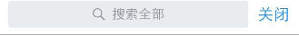

1. 书城主要功能是找书，按照几大种类对书籍提供分类，也可以通过搜索进行
2. 点击书城中的任何一本书的封面可以进入到书籍简介界面
3.当然其实书城也是有很多入口的，比如写想法时如果发现你还没看过书会提示你去找书，毕竟书城才是为产品提供收入的地方。本原型为了方便起见没有做该功能而已
4. 微信读书有很多地方有用到上下拖动的功能，本原型以书城为案例进行了该拖动功能的实现。有些左右跟随的移动的效果实现也是类似。另外拖动效果还可以根据拖动的时间的长短来判断是跟随手指移动，还是直接切换到下一屏，安卓版微信主菜单的左右移动效果。
对于拖动效果很简单设定动态面板沿Y轴即可。
顶部往下拉到一定程度不能继续拉的功能的具体做法是在顶部设置一块图片热区。然后给动态面板设定拖动时用例，当动态面板未接触该图片热区，则将动态面板移动到一个绝对位置，其中要注意的是必须将这个用例放在动态面板沿Y轴移动的前面。
顶部直接下拉松手后的返回功能也是类似，在上面放一个很小的图片热区，然后设定动态面板拖动结束后用例，如果动态面板未接触到该图片热区，则将动态面板移动到绝对位置。
底部的实现就和顶部基本完全一样了。

